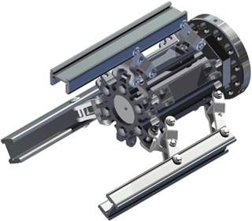
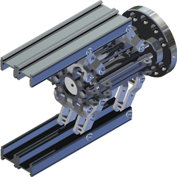
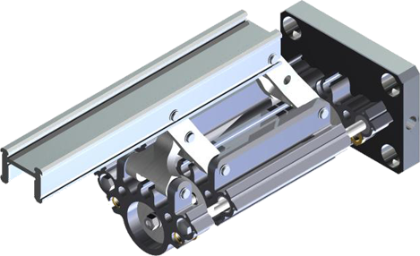
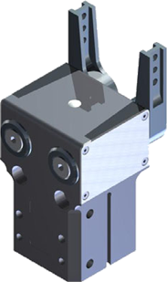
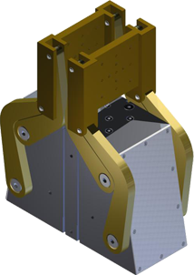
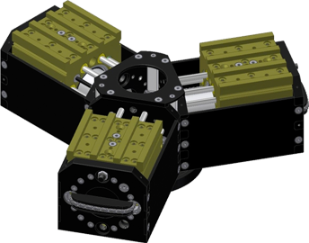
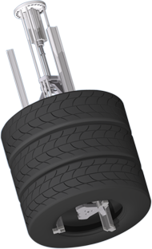
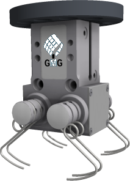
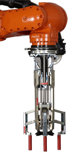

Produkte
Neun Produktfamilien mit über 20 Baureihen: Greifer für Roboter, Maschinen und Handhabungsgeräte, modular aufgebaut und auf Wunsch kundenspezifisch.

Hexagonale Bauform
2- bis 6-Finger-Greifer mit kreisförmiger Anordnung der Greiferfinger.
Ansehen
Rechteckige Bauform
2- bis 6-Finger-Greifer mit rechtwinkliger Anordnung der Greiferfinger.
Ansehen
Einzelfinger
Greifer- und Spannmodul E03 – Maschinenelement für Eigenkonstruktionen.
Ansehen
Winkelgreifer
Abgedichtete 180°-Winkelgreifer in extrem robuster Ausführung.
Ansehen
Parallel-Winkelgreifer
2- oder 3-Finger-Greifer mit maximaler Fingeröffnung und vier angetriebenen Armen pro Backe. Eine GMG-Erfindung.
Ansehen
Schwerlastgreifer
Modularer Greifertyp mit bis zu 850 Nm Belastbarkeit pro Achse und Finger.
Ansehen
Reifengreifer
Der meistnachgebaute Greifer. Direkt vom Erfinder.
Ansehen
Nadelgreifer
Abgedichtete Nadelgreifer für weiche oder unregelmäßige Teile.
Ansehen
Langarmgreifer
Schlanker 3-Finger-Greifer für den Griff in die Ecken von Kisten und Kartonagen.
AnsehenAlle Baureihen auf einen Blick
| Baureihe | Beschreibung | Familie |
|---|---|---|
| C03 | Zwei- bis Sechsfinger Greifer | Hexagonale Bauform |
| C06 | Zwei- bis Sechsfinger Hohlgreifer | Hexagonale Bauform |
| C10 | Zwei- bis Sechsfinger Hohlgreifer | Hexagonale Bauform |
| C16 | Zwei- bis Sechsfinger Hohlgreifer | Hexagonale Bauform |
| CP | Schwenkende Bewegungsform mit parallelgeführten Backen | Hexagonale Bauform |
| B02 | Zwei- bis Sechsfinger Greifer | Rechteckige Bauform |
| A06 | Zwei- bis Vierfinger Hohlgreifer | Rechteckige Bauform |
| B10 | Zwei- bis Sechsfinger Hohlgreifer | Rechteckige Bauform |
| CP | Schwenkende Bewegungsform mit parallelgeführten Backen | Rechteckige Bauform |
| E03 | Einzelfinger-Greifer- und Spannmodul | Einzelfinger |
| W03 | Abgedichteter 180° Winkelgreifer | Winkelgreifer |
| W05 | Abgedichteter 180° Winkelgreifer | Winkelgreifer |
| W06 | Abgedichteter 180° Winkelgreifer | Winkelgreifer |
| W10 | Abgedichteter 180° Winkelgreifer | Winkelgreifer |
| PW106 | Abgedichteter 2-Finger-Parallel-Winkel-Greifer | Parallel-Winkelgreifer |
| PW206 | Abgedichteter 2-Finger-Parallel-Winkel-Greifer | Parallel-Winkelgreifer |
| PW306 | Abgedichteter 3-Finger-Parallel-Winkel-Greifer | Parallel-Winkelgreifer |
| Sx10 | Einzelmodul Schwerlastgreifer | Schwerlastgreifer |
| S210 | Zweifinger Schwerlast-Parallelgreifer | Schwerlastgreifer |
| S310 | Dreifinger Schwerlast-Zentrischgreifer | Schwerlastgreifer |
| S410 | Vierfinger Schwerlast-Zentrischgreifer | Schwerlastgreifer |
| S610 | Sechsfinger Schwerlast-Zentrischgreifer | Schwerlastgreifer |
| R106 | Reifengreifer | Reifengreifer |
| N203 | Abgedichteter Nadelgreifer | Nadelgreifer |
| N206 | Abgedichteter Nadelgreifer | Nadelgreifer |
| I105 | Langarmgreifer | Langarmgreifer |
Ihre Handhabungsaufgabe. Unsere Greiferlösung.
Rufen Sie uns an oder schicken Sie uns Ihre Anfrage, gern mit Zeichnung oder Skizze. Häufig entsteht daraus ein kundenspezifischer Greifer.
folgt
Name und Funktion folgen